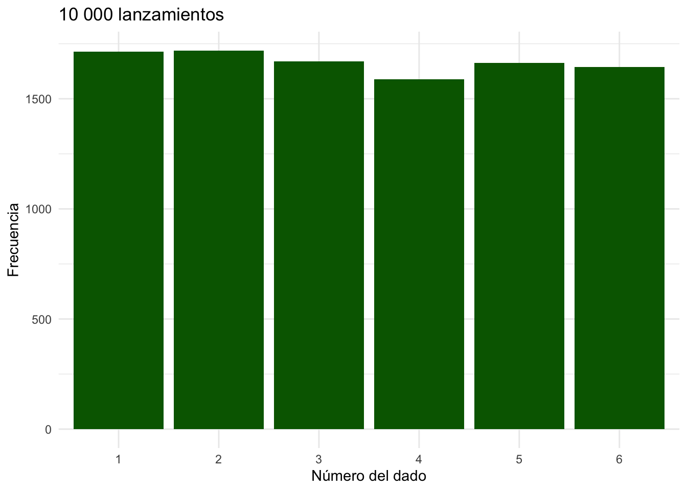
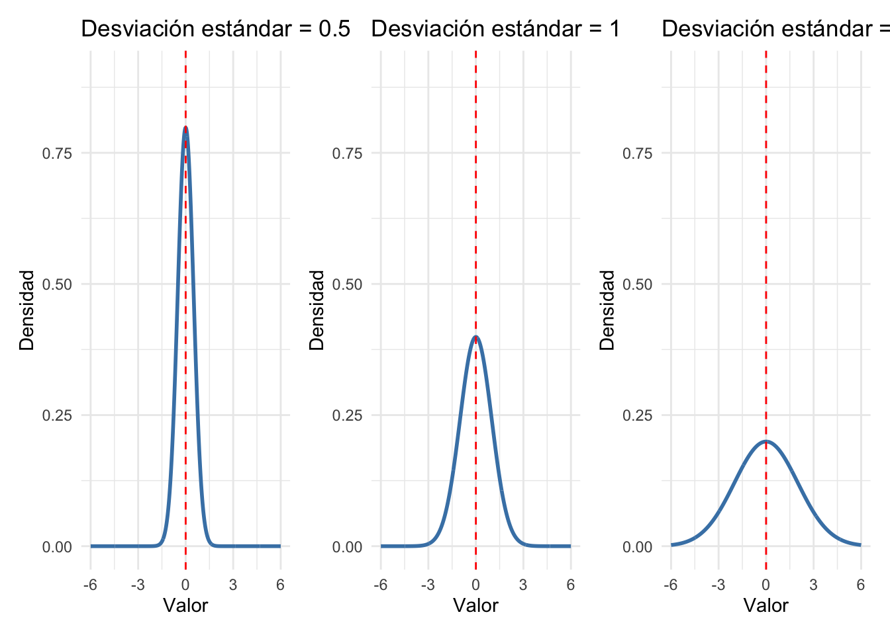
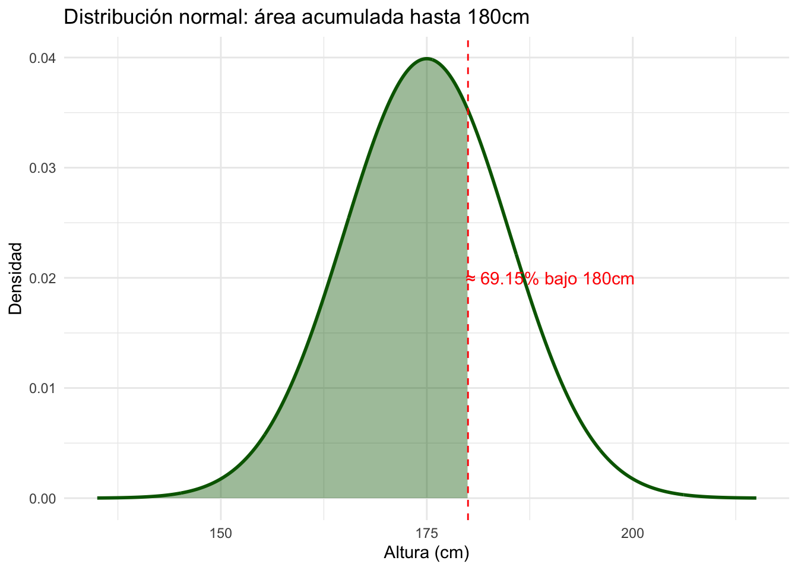

Sesión 4: Probabilidad, simulación, pruebas estadísticas y modelos de regresión
Fundamentos de Probabilidad
Para analizar datos con criterio estadístico y formular conclusiones que vayan más allá de lo observado, es fundamental comprender qué implica hablar de probabilidad. Aunque su origen precede al desarrollo formal de la estadística, la probabilidad se ha convertido en uno de los pilares fundamentales para interpretar fenómenos aleatorios, cuantificar la incertidumbre y construir modelos que permitan realizar inferencias válidas a partir de una muestra.
En su libro Probability, Statistics, and Data: A Fresh Approach Using R, Speegle (2021) propone una definición precisa:
“La probabilidad de un evento es un número entre cero y uno que describe la proporción de veces que se espera que dicho evento ocurra.”
Este enfoque es frecuentista, es decir: entiende la probabilidad como un valor que resume lo que se espera en el largo plazo si un experimento se repite muchas veces.
Esta idea sugiere que hablar de la probabilidad de un evento es cuantificar cuán probable es su ocurrencia, comparada con todos los resultados posibles. Al lanzar una moneda, la probabilidad de obtener sello es de \(\frac{1}{2}\), lo que equivale a 0.5 o al 50%. Esta proporción puede visualizarse como una fracción de veces que se espera que ocurra el evento a lo largo de múltiples repeticiones del experimento.
Podemos visualizar la probabilidad de este evento como una barra que representa el resultado del la moneda que nos interesa, en relación con el total de resultados posibles.
Ambas barras representan la proporción del total de posibles resultados. En términos gráficos, la altura de la barra muestra la probabilidad de que ocurra cada resultado.
Aquí es donde el concepto de área tiene relevancia. La probabilidad de cada número puede visualizarse como el área de la barra en un gráfico, en comparación con el área total que representan todos los posibles resultados. Para la moneda, la probabilidad de obtener un sello es \(\frac{1}{2}\), lo que significa que la barra para el resultado sello ocupa la mitad del área total del gráfico.
Pero, ¿qué pasa cuando no estamos tratando con eventos discretos, como el lanzamiento de una modena, sino con variables que pueden tomar un rango infinito de valores? Por ejemplo, si quisiéramos saber la probabilidad de que la altura de una persona esté entre 160 cm y 170 cm, no podemos representar esta situación con barras, porque los valores posibles son infinitos (puede haber alturas de 160.1 cm, 160.2 cm, etc.).
En estos casos, la probabilidad la representamos con una curva. Al igual que con las barras, el área bajo la curva nos muestra la probabilidad, pero en este caso, la probabilidad se calcula para un rango de valores. La idea sigue siendo la misma: la probabilidad es el área, pero ahora estamos mirando el área bajo una curva en lugar de barras separadas.
Por ejemplo, si estamos interesados en la probabilidad de que una altura esté entre 160 cm y 170 cm, esa probabilidad sería el área bajo la curva entre esos dos puntos. Mientras que en el caso de las barras sabíamos exactamente cuántos resultados posibles había, en el caso de la curva no tenemos un número fijo de resultados, sino un rango, y el área debajo de ese rango nos da la probabilidad de que el valor caiga ahí.
La probabilidad como frecuencia relativa a largo plazo
En situaciones sencillas, el proceso es completamente conocido y la probabilidad puede estimarse de forma intuitiva. Imaginemos un escenario básico: un dado de seis caras numeradas del 1 al 6, y el objetivo es calcular la probabilidad de obtener un 3 al lanzarlo.
Sabemos que el dado tiene seis caras y que cada una tiene la misma probabilidad de aparecer, asumiendo que no está cargado. Si definimos el evento de interés como “obtener un 3”, entonces existe una única cara favorable entre seis posibles resultados.
Por tanto, la probabilidad de obtener un 3 en un solo lanzamiento de dado se puede calcular como:
\[ P(\text{Sacar un 3}) = \frac{\text{Número de resultados favorables}}{\text{Número total de resultados posibles}} = \frac{1}{6} \]
Es decir…
\[P(3) = \frac{1}{6} \approx 0.1667\]
Cuando todas las opciones son igualmente probables y bien definidas, podemos calcular la probabilidad teóricamente:
\(P(3) = \frac{1}{6} \approx 0.1667\)
Esto significa que, sin necesidad de lanzar el dado, ya sabemos que la chance de obtener un 3 es de una entre seis.
Este razonamiento aplica también a otros casos simples:
- Moneda: \(\frac{1}{2}\) chance de cara.
- Baraja: \(\frac{4}{52}\) chance de sacar un as en la cartas.
Pero… ¿y si el dado está alterado?
Si no sabemos si el dado es justo, no podemos asumir que cada cara tiene igual probabilidad.
En esos casos, recurrimos a la probabilidad experimental, es decir, observamos cuántas veces ocurre un evento tras varios intentos.
Probabilidad experimental
Veamos qué tan cerca está la frecuencia observada del valor teórico. Comenzamos con 10 lanzamientos:
set.seed(123)
lanzamientos_10 = sample(1:6, 10, replace = TRUE)
sum(lanzamientos_10 == 3) / 10[1] 0.3¿Qué ocurre si lanzamos el dado 100 veces?
lanzamientos_100 <- sample(1:6, 100, replace = TRUE)
sum(lanzamientos_100 == 3) / 100[1] 0.15¿Y con 10,000 lanzamientos?
lanzamientos_10000 <- sample(1:6, 10000, replace = TRUE)
sum(lanzamientos_10000 == 3) / 10000[1] 0.167A medida que aumenta el número de lanzamientos, la probabilidad experimental se aproxima al valor teórico: \[P(3) = \frac{1}{6} \approx 0.1667\]

Distribución Normal
La distribución normal, también conocida como la “la campana de Gauss”, es una distribución continua que describe cómo se distribuyen los datos alrededor de un valor central (la media). Se caracteriza por ser simétrica alrededor de la media, con valores más probables cercanos a la media, y menos probables a medida que nos alejamos de ella. Es una de las distribuciones más importantes en estadística.
La fórmula para la distribución normal es:
\[ f(x) = \frac{1}{\sigma \sqrt{2\pi}} e^{-\frac{(x - \mu)^2}{2\sigma^2}} \]
Aquí tenemos dos valores que modifican el comportamiento de la distribución:
\(\mu\) es la media de la distribución, donde se agrupan los datos.
\(\sigma\) es la desviación estándar, que describe la dispersión de los valores con respecto a la media.

Introducción a funciones de distribución en R: rnorm, dnorm, pnorm, rbinom, runif
Cuando realizamos análisis estadístico, es común trabajar con distribuciones de probabilidad para modelar fenómenos reales como:
La altura de las personas. El número de clientes que llegan a un restaurante. El número de éxitos en una serie de intentos.
En R, usamos funciones con esta estructura:
| Función | Propósito | Ejemplo |
|---|---|---|
d***() |
Densidad en un punto específico | dnorm(180, 175, 10) |
p***() |
Probabilidad acumulada hasta un valor | pnorm(180, 175, 10) |
q***() |
Cuantil o valor para una probabilidad dada | qnorm(0.9, 175, 10) |
r***() |
Simulación de datos aleatorios normales | rnorm(100, 175, 10) |
En esta sección, nos centraremos en la distribución normal, pero ten en consideración que hay mas distribuciones de probabilidad. Nos centramos en la normal por su importancia en las pruebas estadísticas.
Supongamos que la altura de hombres adultos sigue una distribución normal con media 175cm y desviación estándar 10cm.
mean = 175
sd = 10 dnorm(): Densidad en un punto específico
¿Qué tan común es medir 180cm? (dnorm)
x = 180dnorm(x, mean = mean, sd = sd)[1] 0.0352Esto da aproximadamente 0.035, una densidad más baja que la media (175cm). Lo visualizamos:
pnorm(): Probabilidad acumulada hasta un valor
¿Qué porcentaje mide menos de 180m? (pnorm)
pnorm(x, mean = mean, sd = sd)[1] 0.691Esto da aproximadamente 0.6915, es decir, el 69.15% de los hombres miden 180cm o menos.

qnorm(): Cuantil o valor para una probabilidad dada
¿Cuál es el percentil 90? (qnorm)
qnorm(0.90, mean = mean, sd = sd)[1] 188El percentil 90 está en 188cm. Solo el 10% mide más que eso.
Simular alturas reales (rnorm)
set.seed(123)
alturas = rnorm(100, mean = mean, sd = sd)
head(alturas)[1] 169 173 191 176 176 192Demostración del Teorema del Límite Central
Este teorema es fundamental para entender los métodos inferenciales
“Si tomamos muchas muestras aleatorias de un mismo tamaño de una población (sea cual sea su distribución original), la distribución de sus estadísticos tenderá a una distribución normal a medida que el tamaño de las muestras aumente.”
Por ejemplo, una distribución uniforme o binomial:
Generamos una “población” no normal (distribución uniforme)
set.seed(123)
poblacion = runif(100000, min = 0, max = 100)hist(poblacion, breaks = 30,
col = "lightblue",
main = "Distribución original",
xlab = "Valores")Y calculamos la media de cada muestra.
Simulamos 5000 muestras de tamaño 30
n_muestras = 5000
tamano_muestra = 30
medias = replicate(n_muestras,
mean(sample(poblacion,
tamano_muestra,
replace = TRUE)))A medida que aumentamos el tamaño de las muestras, las medias muestrales tienden a agruparse más cerca de la media poblacional. Esto ocurre porque el error estándar (la desviación estándar de la distribución de las medias muestrales) disminuye cuando el tamaño de muestra crece. En términos prácticos, esto significa que con muestras más grandes obtenemos estimaciones más precisas de la media verdadera de la población. Esta propiedad es fundamental en estadística inferencial y es una de las razones por las que el tamaño muestral importa tanto en los estudios empíricos.
Contraste de hipótesis
El contraste de hipótesis es una herramienta estadística que nos permite decidir si un resultado observado en una muestra nos da suficiente evidencia para apoyar una afirmación sobre una población. Existen varias pruebas pero se caracterizan por ser todas un proceso organizado que nos ayuda a diferenciar entre resultados que podrían ocurrir solo por variación aleatoria y aquellos que son lo suficientemente inusuales como para indicar un efecto real.
Aunque existen diversas pruebas, todas siguen un proceso estructurado y sistemático diseñado para diferenciar entre resultados que podrían ocurrir únicamente por variación aleatoria y aquellos que son estadísticamente significativos, es decir, lo suficientemente inusuales como para sugerir la presencia de un patrón o efecto real en la población.
Pasos del Contraste de Hipótesis
I. Planteamiento de Hipótesis:
Comenzamos formulando dos hipótesis opuestas:
- La hipótesis nula (\(H_0\)) representa la idea de “no hay efecto” o “no hay diferencia”. Es nuestra afirmación de partida y sugiere que cualquier variación que veamos es simplemente producto de la variación aleatoria inherente a nuestra muestra.
- La hipótesis alternativa (\(H_1\)) representa la afirmación que queremos evaluar. Indica que sí hay un efecto o diferencia en la población.
La hipótesis nula nos da un punto de referencia neutral contra el cual comparamos nuestros resultados para evaluar si son suficientemente distintos como para sugerir algo real.
Dependiendo de la dirección en la que buscamos evidencia contra \(H_0\) el análisis puede ser:
Prueba bilateral (de dos colas): Se usa cuando queremos evaluar si hay una diferencia sin importar la dirección. Por ejemplo, si estudiamos el impacto de una nueva política pública en la tasa de empleo, \(H_1\) indicaría que la política cambia la tasa de empleo, ya sea aumentándola o reduciéndola. En este caso, consideramos ambos extremos de la distribución para determinar si el efecto observado es lo suficientemente inusual como para rechazar \(H_0\).
Prueba unilateral (de una cola): Se usa cuando tenemos una expectativa clara sobre la dirección del efecto. Por ejemplo, si evaluamos si un programa de capacitación mejora las habilidades laborales, la hipótesis alternativa indicaría que el programa aumenta el nivel de habilidades (y no simplemente que lo cambia en cualquier dirección). Aquí, solo nos interesa una de las colas de la distribución.
II. Establecimiento de la Distribución Nula
Incluso si \(H_0\) es cierta, los resultados de una muestra pueden fluctuar debido a la variación aleatoria. Sin embargo, estas fluctuaciones siguen un patrón: la mayoría de los valores observados estarán cerca de la media de la distribución nula, y conforme nos alejamos de esta media, los valores se vuelven menos probables. Esto significa que, en cualquier prueba de hipótesis, necesitamos un criterio que nos ayude a determinar cuándo un resultado es lo suficientemente diferente de lo esperado bajo \(H_0\) como para considerarlo significativo. . Para hacer esta comparación, necesitamos una distribución de referencia que nos muestre cómo se comportaría nuestro estadístico (como la media o la proporción) si la hipótesis nula fuera verdadera.
Al igual que podemos construir una distribución de posibles valores para el estadístico observado, podemos construir una distribución para la hipótesis nula. Recordando el Teorema del Límite Central (TLC), sabemos que, si tomamos muchas muestras de una población y calculamos su estadístico (como la media), los resultados tienden a seguir una distribución aproximadamente normal alrededor del valor supuesto por la hipótesis nula. Esta distribución para la hipótesis nula nos indica qué tan probable es obtener diferentes valores del estadístico bajo la suposición de que no hay efecto o diferencia real.
III. Nivel de confianza y definición de la zonas criticas:
La esencia de un contraste de hipótesis radica en evaluar qué tan diferente o extremo debe ser un valor observado para poder afirmar que no es probable si la hipótesis nula (\(H_0\)) fuera cierta, incluso considerando la variabilidad natural que ocurre por azar. En otras palabras, el contraste de hipótesis busca determinar si el resultado obtenido se desvía tanto de lo esperado bajo \(H_0\) que podemos justificar su rechazo. Este proceso nos permite distinguir entre variaciones que pueden explicarse simplemente por la aleatoriedad inherente al muestreo y aquellas que son lo suficientemente inusuales como para sugerir que existe un efecto real o una diferencia significativa.
Para evaluar si un resultado es lo suficientemente extremo como para considerarlo evidencia en contra de \(H_0\), necesitamos definir un umbral que nos ayude a tomar esta decisión. Este umbral se establece a través del nivel de confianza y el nivel de significancia (\(\alpha\)).
Sabiendo que:
\[ \text{Nivel de confianza} = 1 - \alpha \]
El nivel de significancia \(\alpha\) nos dice cuánto estamos dispuestos a aceptar el riesgo de cometer un Error Tipo I (rechazar \(H_0\) cuando en realidad es cierta). Si elegimos \(\alpha = 0.05\), estamos definiendo que solo el 5% de los valores más extremos de la distribución nula serán considerados “demasiado improbables” bajo \(H_0\).
Por ejemplo, si elegimos un nivel de confianza del 95%, significa que queremos estar seguros en un 95% de que la conclusión que tomemos será correcta y aceptamos un 5% de riesgo de cometer un Error Tipo I (rechazar \(H_0\) cuando en realidad es cierta). Esto implica que el nivel de significancia en este caso es:
\[ \alpha = 0.05 \]
El valor de \(\alpha\) nos ayuda a definir las zonas críticas de la distribución nula, que son las regiones donde un resultado se considerará lo suficientemente improbable como para rechazar \(H_0\). La ubicación exacta de estas zonas depende del tipo de prueba que estemos realizando
Si realizamos una prueba bilateral (de dos colas), el nivel de significancia se divide en dos extremos de la distribución nula, dejando \(\frac{\alpha}{2}\) en cada cola. Esto significa que rechazamos \(H_0\) si el valor observado es demasiado grande o demasiado pequeño en comparación con lo que esperaríamos si \(H_0\) fuera cierta.
Si realizamos una prueba unilateral (de una cola), todo el nivel de significancia \(\alpha\) se coloca en una sola cola de la distribución, dependiendo de si estamos evaluando un efecto mayor o menor. En este caso, rechazamos \(H_0\) solo si el resultado observado es significativamente mayor o significativamente menor de lo esperado bajo \(H_0\).
Para determinar qué tan extremo debe ser un resultado para considerarlo estadísticamente significativo, usamos el valor crítico (\(z\) crítico o \(t\) crítico) que determina la distancia en errores estándar de la media de la distribución.
Por ejemplo, en una prueba basada en la distribución normal estándar, el \(z\) crítico para \(\alpha = 0.05\) en una prueba bilateral es el 2.5% más extremo a cada lado, por lo que aproximadamente \(\pm1.96\)
qnorm(0.975)[1] 1.96qnorm(0.025)[1] -1.96Esto que significa que cualquier estadístico que caiga fuera de este rango se considera lo suficientemente improbable bajo \(H_0\) como para rechazarla. Además, si la muestra es pequeña o la varianza es desconocida, usamos la distribución \(t\) de Student, en cuyo caso el \(t\) crítico dependerá del tamaño muestral y los grados de libertad.
IV. Comparación del Valor Observado con la Distribución Nula
Ya que escogimos \(\alpha = 0.05\), si el valor observado cae en el 5% más extremo de la distribución nula (es decir, en las áreas menos probables), lo consideramos lo suficientemente inusual como para que no pueda explicarse únicamente por la variabilidad aleatoria bajo la hipótesis nula (\(H_0\)). En este caso, rechazamos \(H_0\) y favorecemos la hipótesis alternativa (\(H_1\)).
Si el valor observado está dentro del 95% de la distribución nula, significa que se encuentra dentro del rango esperado por variación natural. No es lo suficientemente inusual, por lo que no rechazamos \(H_0\). En cambio, si el valor observado cae en el 5% más extremo de la distribución, consideramos que es lo suficientemente improbable bajo \(H_0\), por lo que tenemos suficiente evidencia para rechazarla en favor de \(H_1\).
Utilizamos el valor \(t\) y el valor \(z\) para evaluar cuán lejos está un valor observado de lo que esperaríamos bajo la hipótesis nula.
- Para pruebas sobre una media: \[ t = \frac{\bar{x} - \mu_0}{\text{Error estándar}}, \quad \text{donde } \mu_0 \text{ es la media bajo } H_0. \]
- Para pruebas sobre una proporción: \[ z = \frac{\hat{p} - p_0}{\text{Error estándar}}, \quad \text{donde } p_0 \text{ es la proporción bajo } H_0. \] No olvidar que los valores \(z\) y \(t\) representan distancia (en errores estándar) con respecto al centro de la distribución.
V. Decisión Basada en el Nivel de Significancia (\(\alpha\)) y el p-valor:
El contraste de hipótesis, en esencia, usa una distribución nula para comparar los resultados observados con lo que esperaríamos bajo la hipótesis nula. Esto permite hacer una evaluación objetiva, decidiendo si el resultado es suficientemente extremo como para ser significativo o si podría explicarse simplemente por la variabilidad natural en los datos. Por lo que utilizamos nuestro estadístico observado y evaluamos si se encuentra en la zona crítica expresada en valores \(t\) o \(z\).
\[ \text{Región de rechazo: } |t| > t_{\text{crítico}} \quad \text{o} \quad |z| > z_{\text{crítico}} \]
El valor \(t\) o \(z\) observado puede estar tanto a la izquierda como a la derecha, por ello su valor absoluto.
Hay que ser cautelosos ya que con este proceso es que no estamos diciendo que \(H_0\) sea absolutamente falsa, sino que el resultado observado en nuestra muestra es lo suficientemente improbable como para justificar dudar de ella y considerar que \(H_1\) es más plausible.
Otra forma de evaluar si el resultado es suficientemente extremo es mediante el p-valor, que representa la probabilidad de obtener un estadístico de prueba igual o más extremo que el observado, bajo la suposición de que \(H_0\) es verdadera.
Ambos enfoques (comparar el estadístico con el valor crítico o utilizar el p-valor) son dos caras de la misma moneda y llevan a la misma conclusión. Mientras que la comparación con el valor crítico permite establecer de manera directa si un resultado cae dentro de la región de rechazo, el p-valor ofrece una medida de cuán improbable es el resultado bajo \(H_0\).
Para tomar una decisión utilizando el p-valor:
- Si \(p \leq \alpha\) → Se rechaza \(H_0\) ya que el resultado es demasiado improbable bajo la hipótesis nula.
- Si \(p > \alpha\) → No se rechaza \(H_0\) ya que el resultado no es lo suficientemente extremo como para concluir que hay una diferencia significativa.
Este enfoque es especialmente útil porque las pruebas estadísticas en R reportan automáticamente el p-valor.
Recuerda que tenemos una hipótesis nula (\(H_0\)) que representa la idea de que no hay efecto, no hay diferencia, o que se debe al azar. Por ejemplo, si comparamos dos tratamientos, la hipótesis nula podría ser que ambos tienen el mismo efecto.
El p-valor es una forma de medir cuán compatibles son nuestros datos con esa hipótesis nula. Técnicamente, el p-valor es la probabilidad de obtener un resultado igual o más extremo que el observado, asumiendo que la hipótesis nula es verdadera.
Cuidado
el p-valor no te dice la probabilidad de que la hipótesis nula sea cierta. Más bien, te dice qué tan raros serían tus datos si la hipótesis nula fuera cierta. Esta decisión no prueba que \(H_0\) sea verdadera o falsa, solo indica si hay evidencia suficiente, desde el punto de vista estadístico, para cuestionarla.
Pruebas estadísticas comunes
Los tests estadísticos nos permiten contrastar afirmaciones sobre poblaciones a partir de muestras. Cada test evalúa si una diferencia o asociación observada es lo suficientemente grande como para no atribuirla al azar. Todas estas pruebas descansan sobre la misma lógica:
- Planteamos una hipótesis nula (\(H_0\)).
- Evaluamos cuánto se alejan los datos observados de lo esperado bajo \(H_0\).
- Calculamos un estadístico de prueba (como \(t\), \(z\) o \(\chi^2\)).
- Usamos una distribución de referencia para obtener el p-valor.
- Decidimos si rechazamos o no \(H_0\), en función del nivel de significancia (\(\alpha\)).
Prueba t para comparación de medias entre dos grupos
Esta prueba se usa cuando queremos saber si la media de un grupo difiere significativamente de la de otro grupo. Es especialmente útil en contextos de intervención o comparación.
Ejemplo: Un programa de capacitación fue implementado en algunas municipalidades. Se evalúa si el ingreso promedio mensual cambió respecto a un grupo sin capacitación.
- \(H_0\): la media del grupo tratado es igual a la del grupo control.\
- \(H_1\): las medias son distintas (o, en una prueba unilateral, que una es mayor que la otra).
El estadístico t se calcula como:
\[ t = \frac{\bar{x}_1 - \bar{x}_2}{\sqrt{\frac{s_1^2}{n_1} + \frac{s_2^2}{n_2}}} \]
Donde \(\bar{x}_1\) y \(\bar{x}_2\) son las medias de cada grupo, \(s_1^2\) y \(s_2^2\) las varianzas, y \(n_1\), \(n_2\) los tamaños muestrales.
Ejemplo:estamos investigando si existen diferencias en el tiempo de ocio semanal entre hombres y mujeres. Para ello, ha recolectado información sobre la cantidad de horas que cada persona dedica al ocio en una semana y desea comparar las medias de ambos grupos.
ocio = read_csv('horas_ocio.csv')glimpse(ocio)Rows: 200
Columns: 2
$ genero <chr> "hombre", "mujer", "hombre", "hombre", "mujer", "mujer", "m…
$ horas_ocio <dbl> 15, 9, 13, 12, 13, 11, 13, 15, 14, 11, 14, 16, 10, 13, 13, …Podemos utilizar describeBy del paquete psych para realizar los resúmenes numéricos pertinentes por cada nivel (categoría) de la variable genero.
library(psych)describeBy(ocio$horas_ocio, ocio$genero)
Descriptive statistics by group
group: hombre
vars n mean sd median trimmed mad min max range skew kurtosis se
X1 1 100 15.7 2.47 15 15.6 2.97 11 24 13 0.58 0.35 0.25
------------------------------------------------------------
group: mujer
vars n mean sd median trimmed mad min max range skew kurtosis se
X1 1 100 12.1 2.31 12 12.1 1.48 6 17 11 0 -0.39 0.23Esto nos permite comparar cómo varían las horas de ocio entre ambos grupos, pero una manera aún más intuitiva de explorar estas diferencias es mediante una representación gráfica. Para ello, utilizamos un boxplot, que nos muestra la distribución del tiempo de ocio según el género.
ocio %>%
ggplot(aes(x = genero, y = horas_ocio, fill = genero)) +
geom_boxplot() +
labs(title = 'Horas de ocio semanal por género',
y = 'Cantidad de horas') +
theme_minimal()
El gráfico muestra una diferencia en la distribución entre los grupos. La clave aquí es que tan diferentes son como para poder afirmar que efectivamente el género influye o explica la variación en las horas de ocio.
Podemos generar un resumen descriptivo con la media y la desviación estándar utilizando dplyr
estadisticas = ocio %>%
group_by(genero) %>%
summarise(
promedio = mean(horas_ocio),
sd = sd(horas_ocio),
n = n()
)
estadisticas# A tibble: 2 × 4
genero promedio sd n
<chr> <dbl> <dbl> <int>
1 hombre 15.7 2.47 100
2 mujer 12.1 2.31 100Para cuantificar esta diferencia, necesitamos calcular un estadístico de comparación, que en este caso es la diferencia de medias muestrales, representada por \(\Delta\) (Delta).
diferencia = diff(estadisticas$promedio)
diferencia[1] -3.6Por lo que la diferencia de medias \(\Delta \bar{x}\) es: \[ \Delta \bar{x} = \bar{x}_{Hombres} - \bar{x}_{Mujeres} = 15.8 - 12.2 = 3.6 \]

Planteamiento de Hipótesis
El primer paso es formular nuestras hipótesis estadísticas:
Hipótesis nula (\(H_0\)): No existe diferencia entre las medias de las dos poblaciones. En otras palabras: \[ H_0: \mu_{Hombres} - \mu_{Mujeres} = 0 \]
Hipótesis alternativa (\(H_1\)): Existe una diferencia significativa entre las medias de las dos poblaciones: \[ H_1: \mu_{Hombres} - \mu_{Mujeres} \neq 0 \]
El contraste de hipótesis nos permite evaluar si la diferencia observada en las horas de ocio promedio es lo suficientemente grande como para no atribuirse al azar. Bajo la hipótesis nula (\(H_0\)), asumimos que el género no influye en las horas de ocio, es decir, que la diferencia de medias en la población es cero (\(\mu_1 = \mu_2\)). Si rechazamos (\(H_0\)), concluimos que el género sí tiene un efecto significativo.
En nuestro caso, hemos planteado una prueba bilateral, donde la hipótesis alternativa (\(H_A\)) simplemente indica que existe una diferencia entre los grupos, sin especificar la dirección:
\[ H_A: \mu_1 \neq \mu_2 \]
library(broom)prueba_t = t.test(horas_ocio ~ genero,
data = ocio,
conf.level = 0.95)
tidy(prueba_t)# A tibble: 1 × 10
estimate estimate1 estimate2 statistic p.value parameter conf.low conf.high
<dbl> <dbl> <dbl> <dbl> <dbl> <dbl> <dbl> <dbl>
1 3.6 15.7 12.1 10.7 3.04e-21 197. 2.93 4.27
# ℹ 2 more variables: method <chr>, alternative <chr>Interpretación:
- Si \(t\) es muy alto en valor absoluto (es decir, muy alejado del 0), y el p-valor < \(\alpha\) rechazamos \(H_0\).
- Esto indica que la diferencia de medias es suficientemente grande como para no atribuirse solo al azar.
Importante
Si las varianzas no son iguales, se usa la versión de Welch. La prueba asume normalidad o un tamaño muestral grande (por el TLC).
Test de proporciones
El contraste de hipótesis para la diferencia de proporciones entre dos grupos sigue una estructura similar al de medias, pero evalúa si la diferencia observada entre las proporciones muestrales es suficientemente extrema como para concluir que no se debe al azar.
Ejemplo: Queremos saber si el 30% de apoyo a una reforma educativa en una encuesta nacional difiere del 50% que se espera históricamente.
- \(H_0\): \(p = 0.5\)
- \(H_1\): \(p \neq 0.5\) (prueba bilateral)
El estadístico es:
\[ z = \frac{\hat{p} - p_0}{\sqrt{\frac{p_0(1 - p_0)}{n}}} \]
Donde:
- \(\hat{p}\) es la proporción observada,
- \(p_0\) es la proporción bajo \(H_0\),
- \(n\) es el tamaño muestral.
Región 1: 80 de 100 personas aprueban Región 2: 70 de 100 personas aprueban
prop.test(x = c(80, 70),
n = c(100, 100))
2-sample test for equality of proportions with continuity correction
data: c(80, 70) out of c(100, 100)
X-squared = 2, df = 1, p-value = 0.1
alternative hypothesis: two.sided
95 percent confidence interval:
-0.0292 0.2292
sample estimates:
prop 1 prop 2
0.8 0.7 Interpretación:
- Si el valor \(z\) cae fuera del intervalo crítico, o si el p-valor es menor a \(\alpha\), rechazamos \(H_0\).
También puede aplicarse para comparar dos proporciones:
\[ z = \frac{\hat{p}_1 - \hat{p}_2}{\sqrt{\hat{p}(1 - \hat{p}) \left( \frac{1}{n_1} + \frac{1}{n_2} \right)}} \]
Donde \(\hat{p}\) es la proporción combinada.
Prueba chi-cuadrado para asociación entre variables categóricas
La prueba chi-cuadrado evalúa si dos variables categóricas están asociadas o si son independientes.
Ejemplo: Queremos saber si la percepción de inseguridad (alta vs. baja) está asociada al sexo (hombre vs. mujer).
- \(H_0\): las variables son independientes.
- \(H_1\): hay asociación entre las variables.
Construimos una tabla de contingencia con frecuencias observadas, y se compara con las frecuencias esperadas bajo la hipótesis de independencia.
El estadístico se calcula así:
\[ \chi^2 = \sum \frac{(O_{ij} - E_{ij})^2}{E_{ij}} \]
Donde \(O_{ij}\) son las frecuencias observadas, y \(E_{ij}\) las esperadas.
Creamos una tabla de contingencia
set.seed(123)
tabla = matrix(c(60, 40, 30, 70), nrow = 2,
dimnames = list("Educación" = c("Universitario",
"No universitario"),
"Empleo" = c("Formal",
"Informal")))tabla Empleo
Educación Formal Informal
Universitario 60 30
No universitario 40 70Prueba chi-cuadrado
chisq.test(tabla)
Pearson's Chi-squared test with Yates' continuity correction
data: tabla
X-squared = 17, df = 1, p-value = 0.00004Interpretación:
- Un valor alto de \(\chi^2\) indica que las diferencias entre observados y esperados son grandes → evidencia contra \(H_0\).
- Si el p-valor asociado es bajo, rechazamos \(H_0\) → hay evidencia de asociación.
Precauciones:
- Las frecuencias esperadas no deben ser demasiado pequeñas (al menos 5 idealmente en cada celda).
- No mide fuerza de asociación, solo existencia.
Importante
Las frecuencias esperadas no deben ser demasiado pequeñas (al menos 5 idealmente en cada celda). No mide fuerza de asociación, solo existencia.
En conclusión
Todas estas pruebas siguen la misma lógica inferencial, que ya vimos con el Teorema Central del Límite y el valor p:
- Si el estadístico de prueba cae en la zona crítica o el p-valor es pequeño, el resultado observado es demasiado raro bajo \(H_0\), por lo que la rechazamos.
- Cuanto mayor el tamaño de muestra, menor el error estándar, y más precisa será nuestra decisión.
ANOVA
Cuando comparamos variación en las medias de los dinstitnos grupos, la prueba de ANOVA (Análisis de Varianza) es la herramienta adecuada. Las pruebas ANOVA siguen la misma lógica e untición matemática vista en las anteriores pruebas pero los cálculos matemáticos son algo más complejas y están fuera del propósito del libro, aunque te animo a revisarlas por ti mismo.
Imagina que estamos investigando si existe una diferencia en la satisfacción laboral entre distintos sectores económicos. Para ello, recopilamos datos de empleados en cinco sectores: Tecnología, Finanzas, Educación, Salud y Manufactura. Su objetivo es determinar si el nivel de satisfacción laboral varía significativamente entre los grupos.
Para medir la satisfacción, cada empleado calificó su experiencia laboral en una escala de 0 a 10, donde:
| Puntuación | Nivel de Satisfacción |
|---|---|
| 0 - 2 | Muy insatisfecho |
| 3 - 4 | Insatisfecho |
| 5 - 6 | Neutral |
| 7 - 8 | Satisfecho |
| 9 - 10 | Muy satisfecho |
ANOVA nos permite comparar las medias de tres o más grupos y determinar si al menos uno de ellos es significativamente diferente de los demás. En lugar de realizar múltiples t-tests (lo que aumentaría el riesgo de error tipo I), ANOVA evalúa si la variabilidad entre los grupos es mayor que la variabilidad dentro de cada grupo, lo que indicaría que las diferencias observadas no se deben al azar.
En pruebas anteriores vimos que, cuando comparamos dos grupos, usamos la distribución t para evaluar la diferencia entre sus medias. La distribución \(t\) es útil para comparar dos muestras porque se basa en la diferencia de medias y la variabilidad dentro de cada grupo. En lugar de eso, ANOVA utiliza la distribución F, que compara la variabilidad entre los grupos con la variabilidad dentro de los grupos en una sola prueba.
El estadístico F se define como:
\[
F = \frac{\text{Variabilidad entre grupos}}{\text{Variabilidad dentro de los grupos}}
\]
¿Pero por qué nos interesa comparar la variabilidad entre los grupos con la variabilidad dentro de los grupos? Porque esto nos dice si las diferencias observadas son reales o simplemente producto del azar. Si la variabilidad entre los grupos es similar a la variabilidad dentro de ellos, significa que las diferencias en las medias no son mayores que las fluctuaciones normales que ocurren dentro de cada grupo. En otras palabras, aunque haya cierta dispersión en los datos, esta dispersión es comparable en todos los grupos, por lo que no hay razones para pensar que alguno de ellos sea realmente diferente.
Sin embargo, si la variabilidad entre los grupos es mucho mayor que la variabilidad dentro de ellos, entonces estamos viendo diferencias que van más allá de la variación esperada dentro de cada grupo. Esto nos sugiere que al menos un grupo tiene una media que se aleja significativamente de los demás. Esa es la clave del ANOVA.
La distribución F nos permite determinar qué tan extremo debe ser un valor F para rechazar la hipótesis nula. Valores bajos de F indican que las diferencias entre los grupos no son mayores que las diferencias dentro de ellos, mientras que valores altos sugieren que al menos un grupo es significativamente distinto. Por eso, en las pruebas ANOVA, cuando obtenemos un F suficientemente grande, podemos concluir que hay diferencias estadísticamente significativas entre los grupos analizados.
El primer paso es formular nuestras hipótesis estadísticas:
- Hipótesis nula (\(H_0\)): No existe diferencia en la satisfacción laboral entre los sectores. Es decir:
\[ H_0: \mu_1 = \mu_2 = \mu_3 = \mu_4 = \mu_5 \]
- Hipótesis alternativa (\(H_1\)): Al menos un sector tiene una media de satisfacción diferente:
\[ H_1: \text{Al menos un } \mu_i \text{ es diferente} \]
Bajo (\(H_0\)), los niveles de satisfacción en los distintos sectores son iguales. Si rechazamos (\(H_0\)), concluimos que existe una diferencia significativa en la satisfacción laboral entre al menos un grupo.
Cargamos los datos de la encuesta
satisfaccion = read_csv('base_satisfaccion.csv')Antes de realizar la prueba ANOVA, exploramos las características de cada grupo:
# Estadísticas descriptivas por sector
satisfaccion %>%
group_by(sector) %>%
summarise(
media = mean(nivel_satisfaccion),
desviacion = sd(nivel_satisfaccion),
n = n()
)# A tibble: 5 × 4
sector media desviacion n
<chr> <dbl> <dbl> <int>
1 Educación 4.9 2.89 30
2 Finanzas 4.03 2.74 30
3 Manufactura 2.4 1.40 30
4 Salud 5.97 2.46 30
5 Tecnología 4.93 2.50 30Para visualizar las diferencias en satisfacción laboral entre sectores, podemos utilizar un boxplot:
ggplot(satisfaccion, aes(x = sector,
y = nivel_satisfaccion,
fill = sector)) +
geom_boxplot() +
labs(title = "Distribución de la satisfacción laboral por sector",
x = "Sector Económico",
y = "Nivel de Satisfacción") +
theme_minimal()Utilizamos la función aov() que realiza un ANOVA. Esta función ajusta un modelo estadístico donde la variable repsuesta (satisfacción laboral) se compara entre los niveles de la variable explicativa (sector económico). Al ejecutar summary(), obtenemos una tabla con los resultados del análisis, incluyendo el estadístico F y su p-valor, que nos indican si existe una diferencia significativa entre los grupos. Fíjate en el Pr(>F)
Realizar ANOVA de una vía para comparar la satisfacción laboral entre sectores
anova_resultado = aov(nivel_satisfaccion ~ sector,
data = satisfaccion)Mostrar el resumen del ANOVA con el estadístico F y el p-valor
summary(anova_resultado) Df Sum Sq Mean Sq F value Pr(>F)
sector 4 213 53.3 8.85 0.000002 ***
Residuals 145 874 6.0
---
Signif. codes: 0 '***' 0.001 '**' 0.01 '*' 0.05 '.' 0.1 ' ' 1Regresión
En los apartados anteriores, vimos cómo realizar pruebas de significancia en variables tanto numéricas como categóricas. En este capítulo, nos enfocaremos en analizar la relación entre una variable respuesta numérica y una o más variables explicativas. Este tipo de análisis se conoce como análisis de regresión, uno de los métodos más utilizados en las ciencias sociales para interpretar y modelar situaciones de la realidad social.
Regresión lineal simple (una sola variable predictora)
Ejemplo: Tenemos un conjunto de datos sobre precios de viviendas. Este conjunto contiene información sobre el precio de viviendas en Taiwan y su relación con otras variables como la distancia a la estación de METRO más cercana (dist_to_mrt_m, medida en metros) y el precio promedio por metro cuadrado (price_twd_msq, medido en dólares taiwaneses).
Podemos utilizar un gráfico de dispersión para explorar cómo el precio de las viviendas podría variar según la proximidad al transporte público.
casas = read_csv('taiwan_casas.csv')glimpse(casas)Rows: 414
Columns: 4
$ dist_to_mrt_m <dbl> 84.9, 306.6, 562.0, 562.0, 390.6, 2175.0, 623.5, 287.6…
$ n_convenience <dbl> 10, 9, 5, 5, 5, 3, 7, 6, 1, 3, 1, 9, 5, 4, 4, 2, 6, 1,…
$ house_age_years <chr> "30 to 45", "15 to 30", "0 to 15", "0 to 15", "0 to 15…
$ price_twd_msq <dbl> 11.47, 12.77, 14.31, 16.58, 13.04, 9.71, 12.19, 14.13,…Utilizamos geom_point. Dado que hay una gran superposición entre los puntos, es recomendable ajustar el parámetro alpha para controlar la transparencia y así mejorar la visualización, permitiendo distinguir mejor la densidad de los datos.
g_casa = casas %>%
ggplot(aes(x = dist_to_mrt_m, y = price_twd_msq)) +
geom_point(alpha = 0.6, # Útil para distinguir mejor la aglomeración
color = "darkblue") + # Puntos semitransparentes en azul
labs(
title = "Relación entre distancia al Metro y precio por metro cuadrado",
x = "Distancia al metro (metros)",
y = "Precio (TWD/m²)"
) +
theme_minimal()
g_casa
Podemos notar un tendencia negativa conforma la distancia de la vivienda es mayor a una estación de metro. Si nuestro objetivo es analizar cómo los valores de la variable respuesta (\(y\)) cambian en función de la variable explicativa (\(x\)). Al observar los gráficos de dispersión, podemos identificar un patrón: parece que hay una relación entre las variables, y esta relación muestra un comportamiento que, a simple vista, podríamos aproximar como lineal. Basándonos en esta observación, proponemos que la relación entre \(x\) e \(y\) sea lineal, es decir, que los cambios en la variable explicativa (\(x\)) produzcan cambios proporcionales (constantes) en la variable respuesta (\(y\)).
Ecuación de regresión lineal
De hecho, podemos representar la linea recta que mejor represente esta relación entre las variables utilizando geom_smooth y definiendo un modelo lineal o linear model (lm).
g_casa +
geom_smooth(method = 'lm',
color = 'red',
se = F)Esta línea no es solo una herramienta visual, también nos permite aproximar cómo los cambios en una variable (la explicativa, \(x\)) afectan a otra variable (la respuesta, \(y\)) de forma intuitiva. Siendo una línea recta, podemos describirla con una fórmula matemática. La ecuación de la regresión lineal es la siguiente:
\[y = \alpha + \beta X\]
Donde:
\[Y(\text{variable respuesta}) = \alpha + \beta X(\text{variable explicativa})\]
En R podemos ajustar el modelo de regresión lineal y extraer los parametros de ecuación usando lm(). Su estructura básica sigue la lógica de una fórmula: lm(y ~ x, data = ...), donde y representa la variable dependiente o respuesta, y x la variable independiente. El símbolo ~ se lee como “explicado por” o “en función de”, por lo que la expresión y ~ x indica que estamos tratando de explicar los valores de y a partir de los valores de x. El argumento data = ... especifica el nombre del data frame donde se encuentran esas variables.
Ajustamos el modelo lineal
modelo = lm(price_twd_msq ~ dist_to_mrt_m, data = casas)Vemos los coeficientes (intercepto y pendiente)
coef(modelo) (Intercept) dist_to_mrt_m
13.8734 -0.0022 Con esta información, ya podemos escribir la ecuación del modelo muestral:
\[ \text{Precio de la vivienda} = 13.87 - 0.0022 \cdot \text{Distancia en }m^2 \]
Esto significa que, en base a la información que tenemos disponible sobre las viviendas, la pendiente del modelo es \(-0.0022\). Es decir, por cada metro adicional de distancia a la estación de metro, el precio promedio por metro cuadrado disminuye en alrededor de 0.0022 dólares taiwaneses. Por otro lado, el intercepto es \(13.87\), lo que indica que cuando la distancia a la estación es cero (es decir, en una vivienda ubicada justo al lado del metro, \(x=0\)) el precio estimado por metro cuadrado sería de 13.87 dólares taiwaneses. Si bien en la práctica puede que no existan viviendas exactamente a cero metros del metro, este valor nos da una referencia inicial del modelo y completa la ecuación de la línea recta ajustada.
Aunque esta representación matemática puede parecer un poco abstracta al principio, es simplemente una manera formal de expresar algo que podemos ver intuitivamente en el gráfico. La línea recta nos ayuda a simplificar y entender mejor los patrones en nuestros datos. Sin embargo, como toda simplificación, debemos ser conscientes de sus limitaciones: no todos los puntos se alinean perfectamente con la línea, por lo que la relación que estamos estableciendo es una aproximación. Todos los modelos son aproximaciones simples de la realidad. Un modelo es, en esencia, una representación simplificada de la relación entre variables en una población. Nos ayuda a interpretar patrones observados en los datos.
Sin embargo, es fundamental destacar que este tipo de modelos no pretende capturar toda la complejidad de la realidad. Más bien, funcionan como una herramienta para aproximarnos a las relaciones observadas en los datos. Es crucial recordar que correlación no implica causalidad, y que la relación entre variables dentro de un modelo estadístico no siempre refleja un vínculo de causa y efecto.
Resumen del modelo en R con summary()
En R podemos ajustar el modelo con lm(), y una vez que le asignamos un nombre, podemos usar summary() para obtener un resumen completo que incluye todos los elementos que hemos comentado hasta el momento y algunos más.
summary(modelo)
Call:
lm(formula = price_twd_msq ~ dist_to_mrt_m, data = casas)
Residuals:
Min 1Q Median 3Q Max
-10.710 -1.818 -0.362 1.462 22.234
Coefficients:
Estimate Std. Error t value Pr(>|t|)
(Intercept) 13.873352 0.197462 70.3 <0.0000000000000002 ***
dist_to_mrt_m -0.002197 0.000119 -18.5 <0.0000000000000002 ***
---
Signif. codes: 0 '***' 0.001 '**' 0.01 '*' 0.05 '.' 0.1 ' ' 1
Residual standard error: 3.05 on 412 degrees of freedom
Multiple R-squared: 0.454, Adjusted R-squared: 0.452
F-statistic: 342 on 1 and 412 DF, p-value: <0.0000000000000002Regresión múltiple
Como vimos, la regresión lineal simple busca ajustar un modelo lineal que describa la relación entre una variable respuesta cuantitativa y una sola variable explicativa. Sin embargo, en muchos casos, especialmente en ciencias sociales, esta relación no puede entenderse de forma aislada. La realidad suele estar influida por múltiples factores al mismo tiempo, por lo que se vuelve necesario ampliar el enfoque e incorporar más de una variable explicativa. Esto puede responder a razones teóricas, cuando distintas variables son relevantes para explicar un fenómeno, o a motivaciones analíticas, como explorar mejor la estructura de los datos o evitar interpretaciones sesgadas por omisión de variables importantes.
Cuando establecemos un modelo de regresión con más de una variable explicativa, hablamos de una regresión lineal múltiple. En este tipo de modelos seguimos asumiendo que existe una relación lineal, es decir, de variación proporcional, entre cada variable explicativa y la respuesta \(y\), aunque ahora la línea se transforma en un plano o hiperplano, dependiendo del número de predictores. A diferencia del modelo simple, en la regresión múltiple ya no buscamos entender el efecto de una sola variable sobre \(y\), sino cómo varias variables, en conjunto, contribuyen a explicar su comportamiento.
La representación gráfica del modelo múltiple no es tan directa. Más allá de tres variables, no podemos visualizar de forma intuitiva el espacio geométrico del modelo, por lo que el análisis visual se vuelve más abstracto y la atención se centra en la interpretación de sus coeficientes.
Modelo de regresión múltiple
Y entonces, ¿qué hay de la ecuación del modelo? Si ya entendimos cómo funciona la regresión lineal simple, ahora toca ver cómo se generaliza cuando agregamos más de una variable explicativa.
En la regresión simple trabajamos con dos parámetros clave: el intercepto (\(\alpha\)) y la pendiente (\(\beta\)), donde \(\beta\) representaba el cambio promedio en la variable respuesta \(y\) por cada unidad adicional en la variable explicativa \(x\). La regresión múltiple toma esta lógica básica y la extiende, permitiéndonos incluir varias variables explicativas a la vez. Desde el punto de vista metodológico, esto significa que ya no estamos observando una relación aislada entre dos variables, sino que queremos entender cómo un conjunto de predictores contribuyen en conjunto a explicar la variación en \(y\).
Este modelo se expresa de la siguiente manera:
\[ y_i = \alpha + \beta_1 x_{1i} + \beta_2 x_{2i} + \dots + \beta_p x_{pi} \]
En R, ajustar un modelo de regresión lineal múltiple es tan sencillo como en el caso simple. La función lm() se utiliza de la misma manera, pero ahora incluimos más de una variable explicativa en la fórmula. Por ejemplo, si quisieramos queremos modelar el precio por metro cuadrado (price_twd_msq) como una función de la distancia a la estación de metro (dist_to_mrt_m) y ahora también del número de tiendas de conveniencia cercanas (n_convenience). El código sería el siguiente:
modelo_multiple = lm(price_twd_msq ~ dist_to_mrt_m + n_convenience,
data = casas)summary(modelo_multiple)
Call:
lm(formula = price_twd_msq ~ dist_to_mrt_m + n_convenience, data = casas)
Residuals:
Min 1Q Median 3Q Max
-11.048 -1.774 -0.411 1.447 23.779
Coefficients:
Estimate Std. Error t value Pr(>|t|)
(Intercept) 11.837489 0.393194 30.11 < 0.0000000000000002 ***
dist_to_mrt_m -0.001688 0.000143 -11.80 < 0.0000000000000002 ***
n_convenience 0.362360 0.061291 5.91 0.0000000071 ***
---
Signif. codes: 0 '***' 0.001 '**' 0.01 '*' 0.05 '.' 0.1 ' ' 1
Residual standard error: 2.93 on 411 degrees of freedom
Multiple R-squared: 0.497, Adjusted R-squared: 0.494
F-statistic: 203 on 2 and 411 DF, p-value: <0.0000000000000002